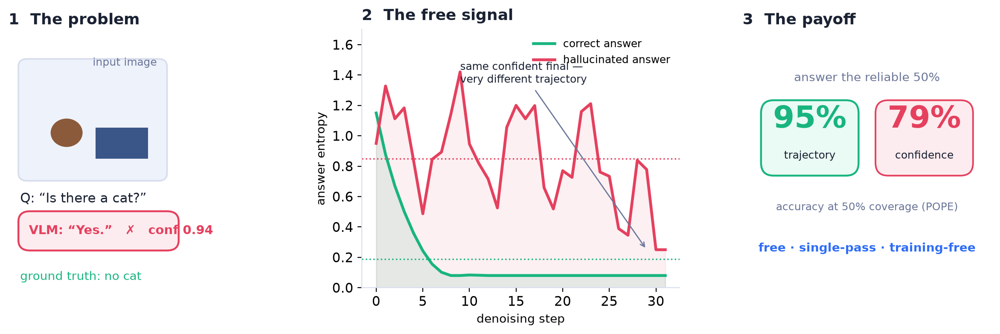
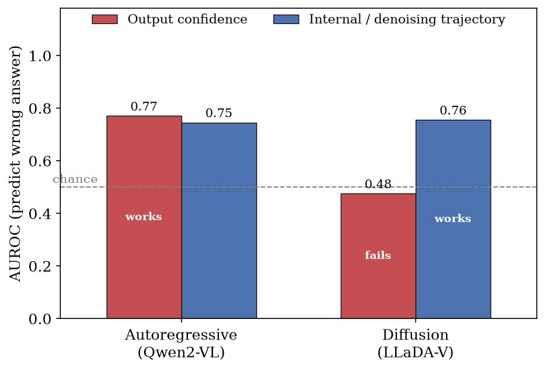
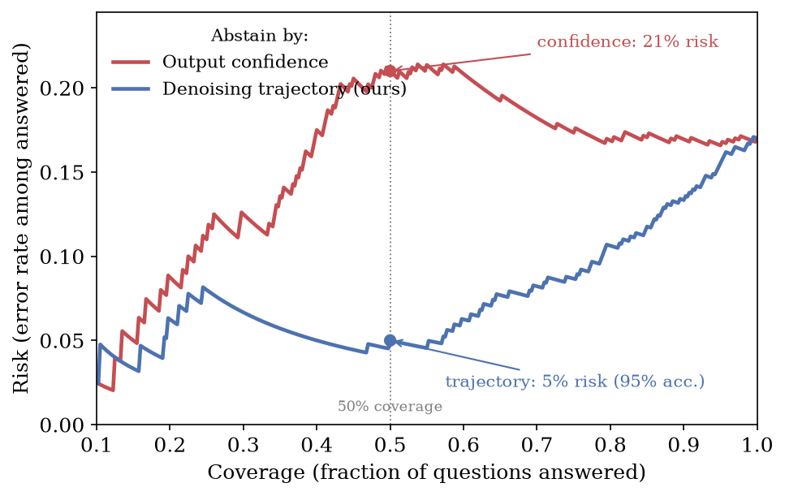
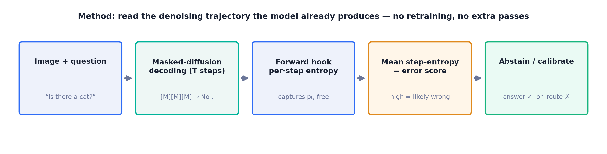

Diffusion vision–language models hallucinate — and their output confidence can be anti-calibrated, most sure exactly when it is wrong. The signal that actually works is free: the model's own denoising trajectory.
The mean step-wise entropy of the denoising trajectory predicts wrong answers at 0.72–0.79 AUROC — while output confidence, the standard reliability knob, drops below chance on LLaDA-V. The trajectory ties confidence where confidence works and dominates it where it fails.

For autoregressive models, high output confidence usually means a safe answer. On a masked-diffusion VLM like LLaDA-V, that intuition inverts: the final distribution is sharp and overconfident even when wrong — its error-detection AUROC sits below chance.
But the answer isn't produced in one shot. It's denoised over many steps, and that hidden trajectory records how much the model wrestled with the answer. A confidently-wrong answer leaves a turbulent, high-entropy trail — and it's free to read.
Masked-diffusion decoding fills the answer over T reverse steps. Toggle between a correct and a hallucinated answer and watch the per-step entropy — the trajectory signal — evolve live.
Top: the answer tokens resolving from [MASK] across denoising steps. Bottom: the entropy trajectory. A correct answer settles early into a flat, low-entropy path; a hallucination stays turbulent — high mean step-entropy — even though the final token looks just as confident.

An AR model commits each token once and writes its uncertainty into the output distribution — so confidence is informative and there is no trajectory to read.
A diffusion model repeatedly overwrites tentative tokens; its uncertainty shows up as temporal instability, even when the final distribution is sharp. Output confidence measures the wrong thing; the trajectory measures the right thing — at no extra cost.
95% bootstrap CIs (10k resamples, n=400): trajectory 0.78 [0.71, 0.84] vs confidence 0.50 [0.43, 0.57] — disjoint.
The trajectory is a strict generalization of confidence: it coincides with confidence when the answer commits in one step, and beats it whenever there is a real denoising trajectory to read.
| Model (diffusion backbone) | Benchmark | Output confidence | Trajectory (ours) |
|---|---|---|---|
| LLaDA-V (LLaDA-8B) | POPE | 0.48 | 0.78 |
| LLaDA-V (LLaDA-8B) | GQA | 0.39 | 0.72 |
| LaViDa (LLaDA-8B) | POPE | 0.75 | 0.75 |
| LaViDa (LLaDA-8B) | GQA | 0.60 | 0.79 |
| LaViDa (Dream-7B) | POPE | 0.74 | 0.74 |
| LaViDa (Dream-7B) | GQA | 0.77 | 0.75 |
AUROC for predicting a wrong answer. Green = trajectory wins; red = confidence fails (below/near chance). Where LaViDa commits answers in ~one step, the trajectory correctly reduces to confidence (verified by per-example correlation).

Used as a reject option, the trajectory turns a diffusion VLM into a usable selective predictor: at 50% coverage it answers its most-reliable half at 95% accuracy (risk 0.05) versus 79% for confidence-based abstention. Area-under-risk–coverage: 0.072 vs 0.141.
A five-parameter logistic head over the trajectory features also yields a calibrated wrong-probability (ECE 0.063 vs 0.169 for confidence) — no model retraining.
Per-step answer entropy for a correct vs a hallucinated example, as an animated 3D landscape. Drag to rotate.
Loading 3D scene…

@inproceedings{confidentlywrong,
title = {Confidently Wrong: Catching Hallucinations in Diffusion
Vision--Language Models with Free Denoising-Trajectory Uncertainty},
author = {Anonymous},
note = {Under review},
year = {2026}
}